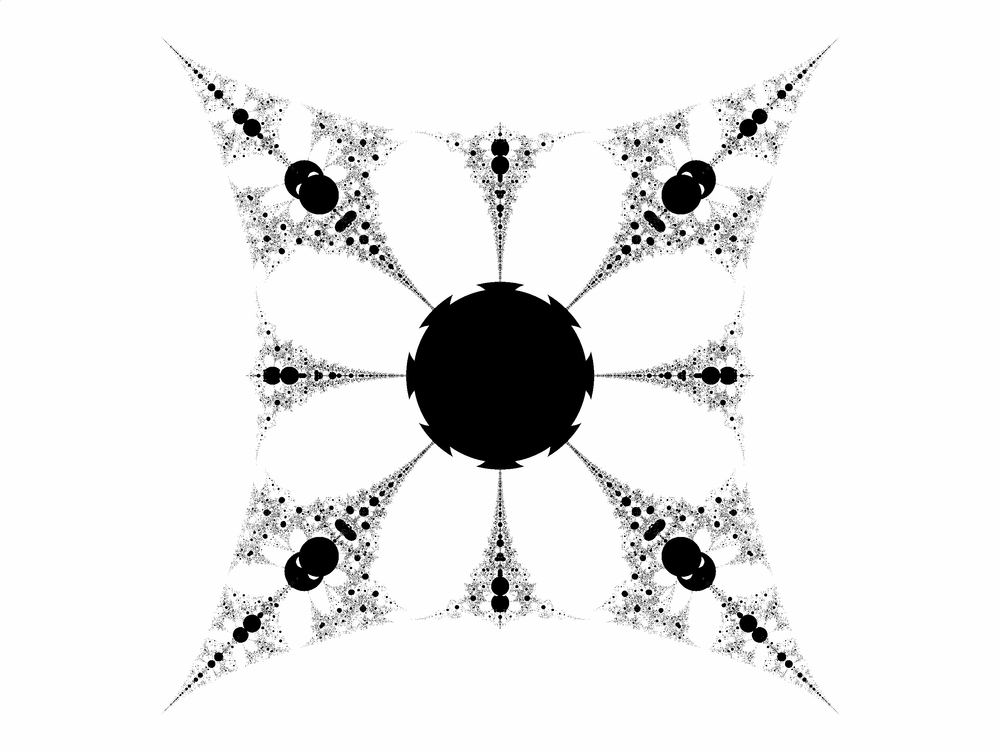

The Mandelbrot Lambda Function Fractal can be generated with the following equation, which extends the traditional equation by allowing pertubations (a+bi) and (c+di):
The 'fn' can be replaced by any function, I enjoy using the following trigonometric function: None (evaluated without a function), Sin, Cos, SinH, CosH, , Ln, .

Mandelbrot Lambda Function Fractal - with Sin function lambda